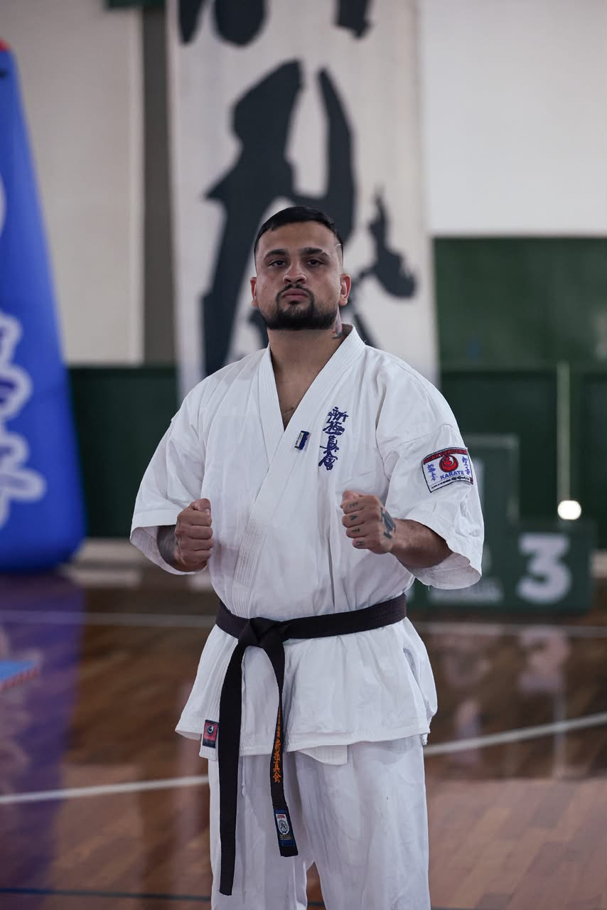

Comecei a treinar Karate aos 14 anos de idade por incentivo do meu cunhado que ja praticava, e desde o primeiro dia senti que aquilo seria algo que eu levaria para toda minha vida.
Ao longo dos anos, participei de diversos campeonatos e conquistei várias medalhas, mas o mais importante foi o crescimento pessoal que o Karate me proporcionou.
O Karate não é apenas um esporte, é uma filosofia de vida que me ensinou disciplina, respeito e perseverança. Cada treino é uma oportunidade de aprender e melhorar.